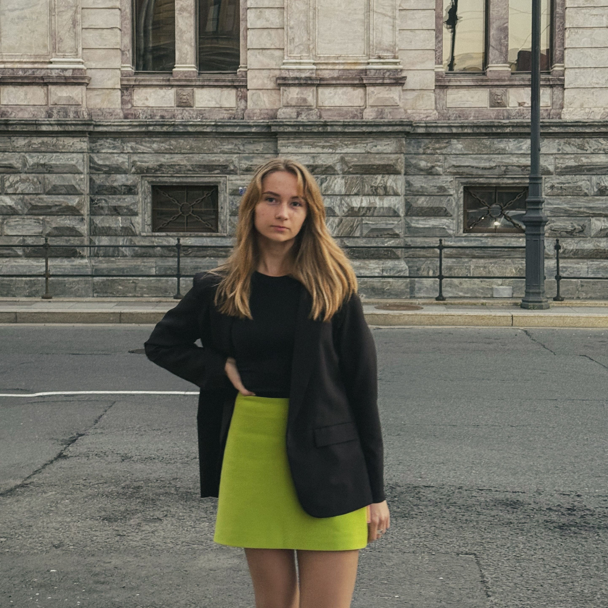

модельер-конструктор
авторский дизайн, лекала и техдокументация
Написать мнеВысшее образование по специальности «Конструирование швейных изделий», дополнительные квалификации «Закройщик» и «Художник по костюму». Работаю со следующими методиками конструирования: ЕМКО СЭВ, «Мюллер и сын», ЦНИИШП. Уверенный пользователь AutoCAD и CorelDraw, Грация, использую AI-инструменты для визуализации моделей и коллекций.
В своих проектах делаю упор на работу с формой и силуэтом, архитектоникой костюма, особое внимание уделяю качеству конструкции и подбору материалов. Ниже представлены работы.
Готова сотрудничать с брендами и индивидуальными заказчиками на разных этапах производства, в зависимости от проекта и требуемых задач выполняю следующие работы:
Являюсь самозанятой, сотрудничество также возможно по ГПХ и трудовому договору.
Почта: mariekazartseva@gmail.com
Телефон: 8 (921) 893-85-78
Телеграм: @M_kvtt